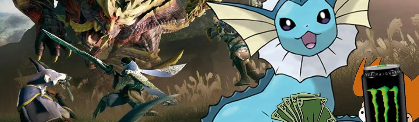

Monster Energy ha presentado quejas de marcas comerciales en contra de las franquicias Pokémon y Monster Hunter en Japón por el uso de la palabra "Monster", sin embargo, sus intentos no han prosperado. El sitio web japonés Automaton reveló más de 100 quejas de marcas registradas realizadas por Monster Energy Company, la empresa madre de Monster Energy Drink, en relación al empleo de "Monster" por parte de varias franquicias y empresas. Dichas denuncias incluyen archivos en contra de Pokémon X e Y, Pokémon Sol y Luna, y Monster Hunter Cross, así como un expediente en contra de la marca comercial Monster Hunter en su totalidad. Estas reclamaciones de marcas registradas han sido rechazadas consistentemente, aunque Monster Beverage continúa presentando quejas hasta la fecha. Recientemente, Monster Energy Company interpuso una denuncia contra Dark Deception: Monsters & Mortals por el uso de Monster en su título.

Monster Energy es conocido por ser un hostigador de marcas registradas, ya que ha presentado reclamaciones y demandas similares en contra de otros videojuegos
por utilizar la palabra "monster" en sus títulos. En general, las quejas se fundamentan en la confusión del producto, alegando Monster que el uso de la palabra
"monster" en los títulos podría confundir a sus consumidores. Monster suele centrarse en las compañías de videojuegos debido a su vínculo con la industria de los videojuegos.
En particular, Immortals: Fenyx Rising enfrentó un desafío legal por parte de Monster Energy cuando se tituló Gods and Monsters, aunque la decisión de Ubisoft de cambiar
el nombre del juego no tuvo relación con la demanda.
La entidad responsable de gestionar las solicitudes de marcas y patentes es la JPO, que ha rechazado sistemáticamente las reclamaciones de Monster,
pero la empresa sigue insistiendo en sus denuncias de marcas registradas. Automaton señala que Monster Energy presentó una reclamación de marca registrada en Japón en noviembre de 2022,
lo que sugiere que no han abandonado su estrategia de proteger su marca en absoluto. Sin embargo, es poco probable que los intentos de Monster de imponer un cambio
en la marca afecten a Pokémon o Monster Hunter, a menos que se produzca un cambio significativo en la legislación de marcas registradas de Japón.